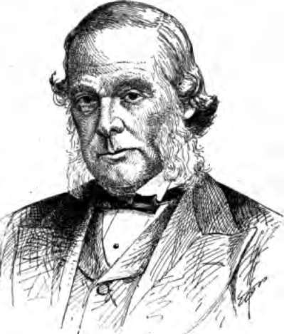
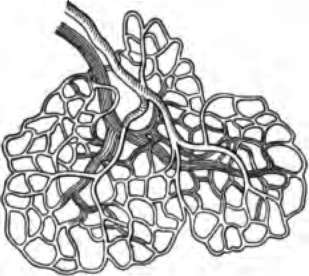

Cleanliness And Warmth. Part 3
Description
This section is from the book "The Human Body And Health", by Alvin Davison. Also available from Amazon: The Human Body and Health.
Cleanliness And Warmth. Part 3
It was Lord Lister, an Englishman, who discovered in 1870 the method of preventing wounds from getting sore and resulting in blood poisoning. Before his discovery it was common for injured persons to lie in the hospitals day after day while they were slowly being eaten up, or poisoned by germs. By the use of germ killers to cleanse the wounds and clean cotton to keep out the germs, ten times as many seriously wounded persons are saved from death as before the discovery of Lister.
Burns And Scalds
A good remedy for burns and scalds is carron oil. This is made by shaking together in a quart jar a half pint of lime water and the same amount of linseed oil. A clean cloth, folded several times and soaked with carron oil, should be bound at once upon the injured place. Cloths spread with vaseline, or wet with kerosene and applied to the burn, give great relief. Baking soda, moistened to form a paste, and spread on the injured part also relieves the pain.
Alcohol And The Kidneys
It has already been shown that the kidneys are important organs in removing from the body what would clog its parts and poison the entire system. It is important therefore, that they should always be in a healthy condition.
Fig. 84. Lord Lister whose discoveries showing how to keep bacteria out of wounds, saves thousands of lives yearly.
The habitual use of beer, whisky, or wine generally produces a change for the worse in the working power of the kidneys. This change comes on so gradually in those accustomed to the use of alcoholic drinks, that the organs are often seriously sick before the victim feels much ill.
Long continued use of alcohol, even that in such weak drinks as beer, often causes part of the kidney tissue to be changed to a fatty substance, and part to become hardened. The whole kidney may shrink. It is no longer able to do its work properly and so fails to remove certain wastes from the blood. This may result in rheumatism, or a more serious ailment, known as Bright's disease.
The cells of the kidney, even in those who use strong drink only moderately, sometimes become sick and let part of the albumin, which is a body food in the blood, escape with the waste matter. This condition is often present for a year or more before the drinker is aware of it. He feels weak, dislikes work, and finally becomes ill enough to consult a physician when it is too late to save his life.
How Alcohol Prevents Keeping The Body Warm
It has been pointed out that one of the chief uses of the skin is to regulate the temperature of the body. This is done by changing the size of the blood vessels. The size is governed by the nerves causing the loosening of the circular muscles in the walls of the blood tubes. Alcoholic drink even in small quantity acts on the nerves in such a way as to make the blood vessels of the skin enlarge. This allows much blood to come to the surface of the body where it is quickly cooled.
Fig. 85. The blood vessels of the skin, which alcohol enlarges.
After a drink of liquor in cold weather, the body feels warmer, because a large amount of blood is sent to the skin where the sense organs of heat are located. In reality the body becomes colder as a thermometer will show. This is why drinkers freeze to death more quickly than abstainers.
Experience Of Sir John Ross With Narcotics
Ross, in an account of his trip to the Arctic regions, says: "I was twenty years older than any of the officers or the crew, yet I could stand the cold better than any of them, who all made use of tobacco and spirits. I entirely abstained from them. The most irresistible proof of the value of abstinence was when we abandoned our ship, and were obliged to leave behind us all our wine and spirits. It was remarkable to observe how much stronger and more able the men were to do their work when they had nothing but water to drink".
Alcohol And The Skin
In some persons quite small doses of alcohol taken daily are sufficient to cause changes in the skin. The blood channels are widened, the circulation becomes slower, the working of the glands is interfered with, and eruptions or pimples may appear.
The prolonged and steady use of alcoholic drink causes the blood vessels of the skin to remain permanently enlarged, and thus produce a redness. The flushed face of a drinker in cold weather may take on a dull leaden hue, or a purple bloated look, due to the widened and gorged blood vessels. A roughness of the skin sometimes occurs as a result of failure to throw off the dead epidermis.
Practical Questions
1. What would be the result if dead matter were not removed from the body? 2. Of what does the ashes of burnt food chiefly consist? 3. What do the kidneys remove? 4. What are the four chief organs removing waste from the body? 5. Of what use is the skin? 6. Give the two parts of the skin. 7. Describe the scarf skin. 8. How are corns produced? 9. What is a blister? 10. What causes freckles and tanning? 11. Describe the true skin. 12. What is the temperature of a healthy body? 13. How is the body temperature kept constant? 14. Describe a sweat gland. 15. Of what use is sweat? 16. What care should be taken in keeping the skin clean? 17. Why should a cold bath be taken every morning? 18. What may cause a rough or pimply face? 19. Describe what care should be given the nails. 20. How is a hair fastened in the skin? 21. What will help stop the falling out of the hair? 22. Give the treatment for a bruise. 23. What care should be given a cut? 24. Describe the remedy for burns and scalds. 25. How does alcohol affect the kidneys? 26. How does alcohol affect the skin?
Suggestions For The Teacher
During the study of this chapter the teacher should impress upon the pupils the importance of keeping themselves neat and clean. It is often necessary to give special directions in regard to caring for the hair, hands and nails. The numerous cases of sickness due to touching food with unclean hands, shows the need of washing before eating or handling food.
Continue to: